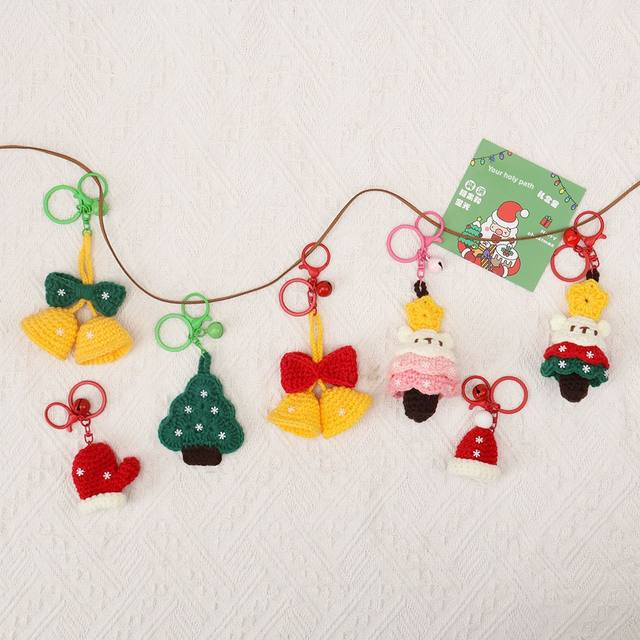

For Seasonal Retail · Corporate Gifts · Holiday Decor
Wholesale Crochet Christmas Ornaments
Plan custom ornaments, stockings and festive amigurumi with coordinated colors, private labels and retail packaging.
MOQ200 pieces per style
PlanningOrder before peak season
CustomColors, characters and sets
PackagingGift boxes and hangtags
Create a Cohesive Holiday Collection
Tree Ornaments
Develop Santas, snowmen, gingerbread, wreaths and branded seasonal characters.
Giftable Sets
Combine coordinated ornaments in retail boxes for higher-value gifting programs.
Seasonal Scheduling
Confirm samples and bulk orders early enough for production and international freight.
Plan Backward from Your Retail Launch
Allow time for design confirmation, sampling, production, inspection, packaging and freight. Early planning gives more flexibility for custom sets and packaging.